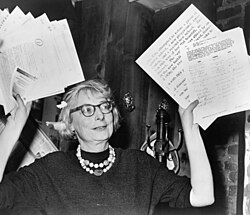

"It is neither love for nature nor respect for nature that leads to this schizophrenic attitude. Instead, it is a sentimental desire to toy, rather patronizingly, with some insipid, standardized, subur-banized shadow of nature-apparently in sheer disbelief that we and our cities, just by virtue of being, are a legitimate part of nature too, and involved with it in much deeper and more ines-capable ways than grass trimming, sunbathing, and contemplative uplift. (445)"
This quote highlights a key critque of suburban life - oftentimes advocates for the suburbs argue that they offer a closer connection to nature than the city, but Jacobs challenges this notion. She specifically highlights how suburbs require the destruction of a natural environment when they are built. She argues that this approach is fundamentally flawed and detrimental to the environment.
"And to put it bluntly, they are all in the same stage of elabo-rately learned superstition as medical science was early in the last century, when physicians put their faith in bloodletting, to draw out the evil humors which were believed to cause disease. With bloodletting, it took years of learning to know precisely which veins, by what rituals, were to be opened for what symptoms. A superstructure of technical complication was erected in such dead-pan detail that the literature still sounds almost plausible. How-ever, because people, even when they are thoroughly enmeshed in descriptions of reality which are at variance with reality, are still seldom devoid of the powers of observation and independent thought, the science of bloodletting, over most of its long sway, appears usually to have been tempered with a certain amount of common sense.(12)"
This quote illustrates Jacobs' comparison of modern urban planning practices to the outdated medical practice of bloodletting, suggesting that both are based on flawed assumptions and lack scientific rigor.
"The Great Blight of Dullness is allied with the blight of traffic congestion. The more territory, planned or unplanned, which is dull, the greater becomes the pressure of traffic on lively districts. People who have to use automobiles to use their dull home territory in a city, or to get out of it, are not merely capricious when they take the cars to a destination where the cars are unnecessary, destruc-tive and a nuisance to their own drivers.(357)"
This quote highlights the relationship between the resliency and vitality of urban cores and the dullness of suburban areas. Specifically it highlights a dynamic of how suburanites often flock to the urban core for its vibrancy and liveliness, causing traffic congestion (since that is the only way suburbanites can get around) and creating political pressure for city officials to accomodate suburbanites by ceding limited space to car-oriented infrastructure (parking structures, etc.)